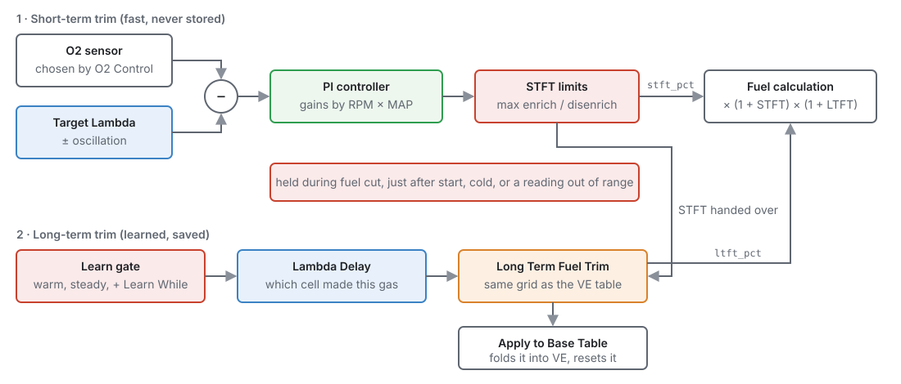
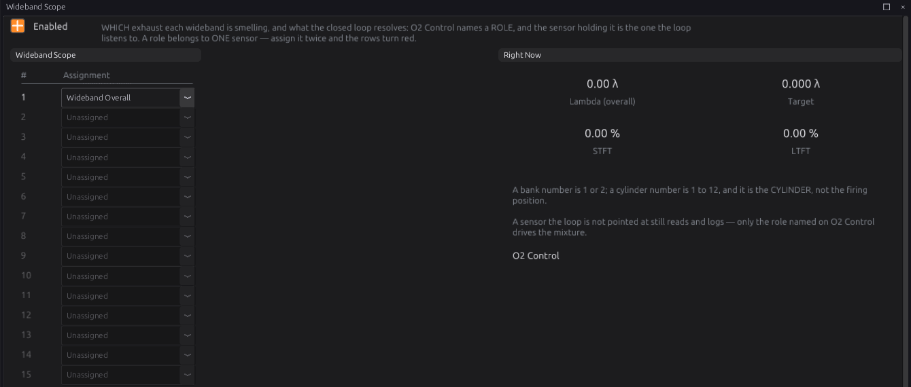
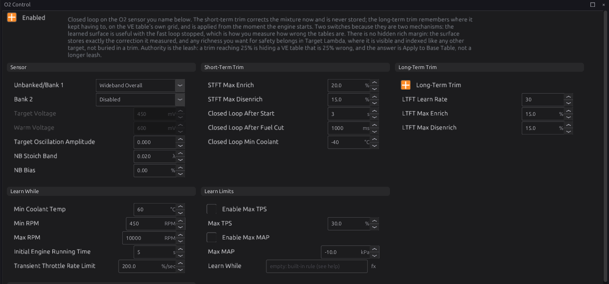
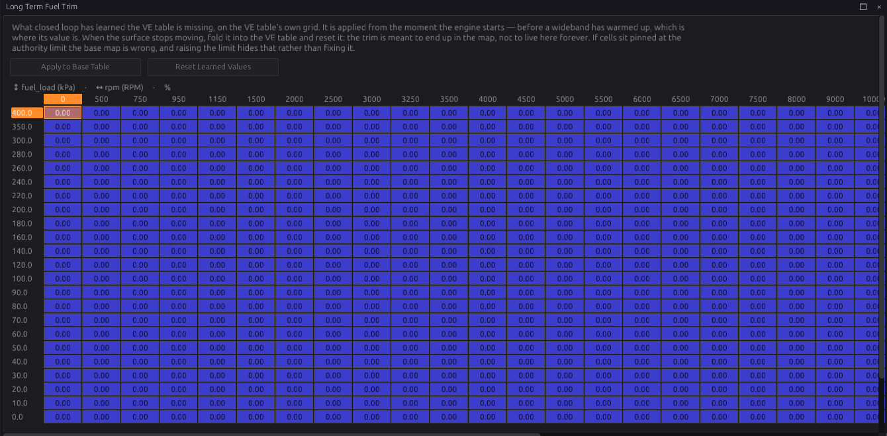
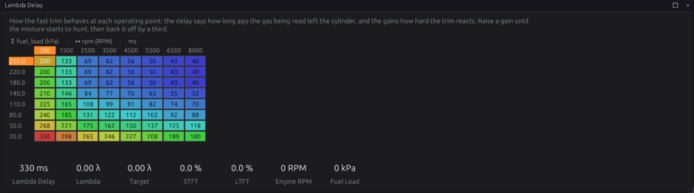
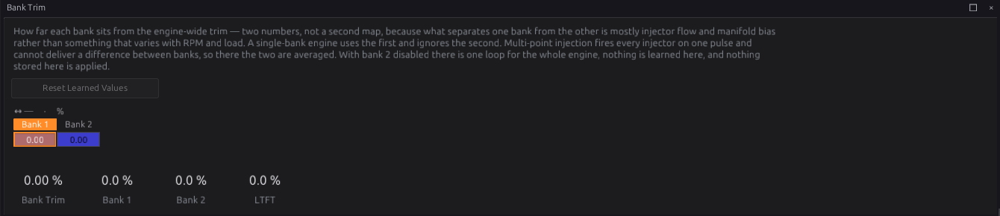

Closed-loop lambda¶
Intermediate → Advanced
In one sentence: closed loop reads the oxygen sensor and adjusts the fuel until the mixture matches Target Lambda — a fast trim that corrects right now, and a learned trim that remembers the correction, cell by cell, on the VE table's own grid.
What it does¶
Basic
The fuel calculation (chapter 19) works out how much fuel the engine should need. If the VE table is a little wrong, or the fuel is different, or the engine has changed, the mixture ends up off target. An oxygen sensor in the exhaust measures what actually happened.
The O2 Control module (lambda) uses that measurement two ways:
- Short-term fuel trim (STFT) — a fast correction, updated about 30 times a second, that moves the mixture towards the target now. It is never saved: it starts from zero every time the engine starts.
- Long-term fuel trim (LTFT) — a learned table with exactly the same cells as the VE table. When the short-term trim keeps having to make the same correction in a cell, that correction moves into the long-term table. The long-term trim is applied from the moment the engine starts, before the sensor has even warmed up.
Each has its own switch. Both off is open loop: the fuel is exactly what the tables say.
Both trims multiply the fuel: 5 % STFT and 3 % LTFT give 1.05 × 1.03 of the calculated fuel.

The trims are a message about the VE table
A long-term trim of +8 % in a cell means the VE table is 8 % short there. The trims are there to correct small, changing errors — fuel, weather, wear — not to hold up a wrong map. When the long-term table has settled, press Apply to Base Table to move it into the VE table (see Step 5).
How it works¶
Intermediate
1 · Which sensor¶
O2 Control listens to one sensor per bank, chosen with Unbanked/Bank 1:
| Choice | Means |
|---|---|
| Disabled | No sensor: no closed loop |
| Narrowband 1 / Narrowband 2 | A narrowband (switching) sensor, set up in chapter 17 |
| Wideband Overall | Whichever enabled wideband has the job Wideband Overall on the Wideband Scope page |
| Wideband Bank 1 | Whichever enabled wideband has the job Wideband Bank 1 |
| Wideband 1 … Wideband 15 | That wideband directly, whatever its job |
The Wideband Scope page gives each wideband a job: Unassigned, Wideband Overall, Wideband Bank 1, Wideband Bank 2, or Cylinder 1–12. Choosing by job means that if you move a sensor to another input, you change one line on Wideband Scope and the loop follows it. Each job can belong to only one sensor; give it to two and the rows turn red and P1754 is set.
A sensor with a Cylinder job, or Unassigned, is still read and logged — useful for a reference probe or for tuning individual cylinder trims (chapter 19) — but the closed loop does not use it. There is no automatic per-cylinder trim.
2 · The short-term trim¶
About 30 times a second:
- The error. For a wideband, the error is how far the reading is from Target Lambda, as a fraction: reading 1.05 with target 1.00 is 5 % lean, and fuel is added. A reading outside the sensor's valid range is ignored.
- The controller. A proportional-integral (PI) controller turns the error into a correction. Its two gains, Proportional Gain and Integral Gain, are tables by engine speed and manifold pressure, because the exhaust takes much longer to reach the sensor at idle than at full load.
- The limits. The correction is kept within STFT Max Enrich (default 20 %) and STFT Max Disenrich (default 15 %). Removing fuel is limited more tightly, because a sensor that wrongly reads rich would lean the engine out.
The trim is held — kept at its value, not driven and not reset — while:
- fuel is cut (overrun, a limiter, protection), and for Closed Loop After Fuel Cut (default 1000 ms) afterwards, while the exhaust refills;
- the engine has been running less than Closed Loop After Start (default 3 s);
- the coolant is below Closed Loop Min Coolant (default −40 °C, meaning never);
- the wideband reads outside its valid range;
- MAP prediction is active: the throttle is moving and the fuel is being worked out from the Predicted MAP table rather than the sensor (chapter 19, section 6).
Closed-Loop Hold lambda_cl_hold says which of these is holding it: None, Fuel Cut, After Cut,
Settling, Cold, Off Range or Transient. While held, the trim shows its integral part only; the
proportional part drops out until the loop runs again.
If the sensor stops reading altogether, or you switch closed loop off, the trim goes back to zero.
3 · The long-term trim¶
The long-term trim is a table with the same axes as the VE table, so each of its cells matches a VE cell. While the engine is running in a cell, that cell's value is applied (the nearest cell, not an interpolation).
Learning. Each time the short-term trim updates, a part of it — set by LTFT Learn Rate (default 30) — moves into the long-term cell, and the short-term trim drops by the same amount. The total correction does not change; it just moves from the fast trim into the stored table. Over a few seconds of steady running, the short-term trim settles near zero and the long-term cell holds the correction. The long-term trim is kept within LTFT Max Enrich and LTFT Max Disenrich (default 15 % each).
Which cell. The gas the sensor reads now left the cylinder a moment ago, when the engine may have been in a different cell. The Lambda Delay table (by engine speed and fuel load) says how long ago. The ECU remembers where the engine has been and credits each reading to the cell that made it. This lets it learn during a hard acceleration, not only at steady speeds.
When it learns. Only when all of these are true:
- closed loop is running (not held);
- not in a fuel cut, and post-start enrichment has finished;
- coolant at least Min Coolant Temp (default 60 °C);
- engine speed between Min RPM (450) and Max RPM (10000);
- the engine has been running at least Initial Engine Running Time (5 s);
- the throttle moving slower than Transient Throttle Rate Limit (200 %/s);
- throttle below Max TPS and manifold pressure below Max MAP (default 100 kPa absolute, about atmospheric), if you enable those limits;
- and the Learn While expression is true, if you write one.
Learn While adds a condition of your own, for example rpm > 1200 to keep learning out of idle.
It can only narrow learning, never widen it. It is written in the expression language (chapter 34).
Saving. The long-term table lives in the ECU's memory and is saved to the SD card every 30 seconds if it has changed, and again when the engine stops. Without an SD card it is learned afresh at every power-up.
4 · Two banks¶
On a V engine with a sensor in each bank, set Bank 2 to the second bank's sensor. Each bank then runs its own short-term trim. The two are split into a common part, applied to the whole engine, and each bank's difference from it, applied to that bank's injectors. The long-term table learns the common part; the difference is learned as two single numbers on the Bank Trim page, because the difference between banks is mostly injector flow and manifold shape, which is much the same everywhere.
Both bank sensors must be the same kind (both widebands or both narrowbands) and different sensors; otherwise P1754 is set and closed loop stays off. With Multi-Point injection every injector fires together, so the two bank corrections are averaged.
5 · Narrowband sensors¶
A narrowband (standard zirconia) sensor only says rich or lean of stoichiometric (lambda 1.00); its voltage jumps between about 0.1 V (lean) and 0.9 V (rich). With a narrowband:
- The loop drives the voltage towards Target Voltage (default 450 mV). It naturally cycles either side of it.
- The sensor is trusted only after it has once reached Warm Voltage (default 600 mV) — a cold sensor cannot produce that much.
- Closed loop runs only while Target Lambda is within NB Stoich Band (default ±0.02) of 1.00. A richer target (under boost, for example) is open loop: a narrowband cannot measure it.
- NB Bias shifts the correction richer (positive) or leaner. It is the only mixture adjustment a narrowband allows.
6 · Target oscillation¶
Target Oscillation Amplitude makes the target swing either side of Target Lambda on purpose. A three-way catalytic converter works best with the mixture cycling a little rich and lean. On a wideband it is in lambda: 0.02 cycles the mixture between about 0.98 and 1.02, the target stepping to the other side each time the reading reaches it. On a narrowband it is in volts. Zero (the default) holds the target still.
Before you start¶
Basic
- A wideband sensor and controller, wired to an analog input or connected over CAN, and set up as a sensor in chapter 17 (or chapter 13 for CAN). Check it reads correctly: about 1.00 at idle on a warm engine with a stoichiometric target, and it responds when you blip the throttle. Or a narrowband sensor, set up the same way.
- A Target Lambda table (chapter 19).
- A VE table that is roughly right. Closed loop corrects small errors; it cannot rescue a VE table that is 30 % out. Get close first — chapter 38, or the auto tuner in chapter 40.
- The sensor in the right place: in the exhaust before any catalyst, far enough from the engine to avoid excess heat, and with no air leaks upstream (a leak reads lean).
Setting it up¶
Intermediate
Step 1 — Give the wideband its job¶
Open Configuration ▸ Fuel Tuning ▸ O2 Control ▸ Wideband Scope. For your sensor's row, choose Wideband Overall (one sensor for the engine) or Wideband Bank 1 and Wideband Bank 2 (one per bank). Leave the others Unassigned. The row number is the wideband's number (Wideband O2 1 is row 1).

Step 2 — O2 Control¶
Open Configuration ▸ Fuel Tuning ▸ O2 Control.

- Set Unbanked/Bank 1 to Wideband Overall (or Wideband Bank 1, or the narrowband).
- Leave Bank 2 Disabled unless you have a sensor for each bank; then set it to Wideband Bank 2.
- Tick Enabled (at the top) to turn on the short-term trim.
- Leave Long-Term Trim off for now.
Start the engine and let it warm up. Watch STFT (stft_pct): once the engine has been running a
few seconds, it should move and then settle. Closed-Loop State (lambda_cl_state) shows 1
(wideband closed loop) or 2 (narrowband closed loop); 3 means enabled but open loop right now (held,
or a narrowband outside its band).
Step 3 — Check the gains¶
At a steady idle and a steady cruise, watch lambda against the target:
- If lambda slowly creeps to the target, raise Integral Gain in that area.
- If lambda swings back and forth about the target, the gains are too high for the delay there; lower Proportional Gain first, then Integral Gain.
The defaults (Proportional 50 %, Integral 80 %) suit most engines.
Step 4 — Long-term trim¶
Tick Long-Term Trim. Drive normally, at a range of speeds and loads, with the engine warm. Open Configuration ▸ Fuel Tuning ▸ Long Term Fuel Trim to watch the table fill in.

Check the Lambda Delay table suits your exhaust. The defaults are typical for a sensor in the downpipe; a sensor much further from the engine needs longer delays, and one right at the turbo outlet shorter ones.

Step 5 — Apply to Base Table¶
When the long-term table has stopped changing, press Apply to Base Table on the Long Term Fuel Trim page. Every cell that has learned something is multiplied into the matching VE cell, and the learned cell goes back to zero, in one step (one Undo). Then Burn.
Reset Learned Values throws the learned table away without changing the VE table. The studio tells you how many cells it would lose and the largest of them first.
Worked examples¶
Intermediate
Example 1 — one wideband
A four-cylinder with one wideband on analog input, sensor Wideband O2 1.
- Wideband Scope: row 1 Wideband Overall.
- O2 Control: Unbanked/Bank 1 = Wideband Overall, Bank 2 Disabled, Enabled, Long-Term Trim on.
- Everything else at the defaults.
Example 2 — a V8 with a wideband per bank
- Wideband Scope: row 1 Wideband Bank 1, row 2 Wideband Bank 2.
- O2 Control: Unbanked/Bank 1 = Wideband Bank 1, Bank 2 = Wideband Bank 2.
- Sequential or semi-sequential injection, so each bank's injectors can be trimmed separately.
- Watch STFT Bank 1 and STFT Bank 2 (each bank's difference from the common trim) and the Bank Trim page.

Example 3 — the original narrowband
A road car keeping its standard narrowband sensor for emissions, with a stoichiometric target at cruise.
- Unbanked/Bank 1 = Narrowband 1. Target Voltage 450 mV, Warm Voltage 600 mV.
- Target Lambda 1.00 wherever you want closed loop. Richer cells (full load) are open loop automatically.
- Target Oscillation Amplitude 0.100 (100 mV) if the catalyst needs a firmer swing.
Example 4 — learning only at cruise
A turbo engine where you want the learned trim to cover part throttle only: tick Enable Max MAP
and set Max MAP to 100 kPa (about atmospheric — MAP is absolute pressure), or write Learn
While as map < 100 and rpm > 1500.
The short-term trim still corrects everywhere the target is measurable.
Tuning it¶
Advanced
- Authority. If the short-term trim often sits at its limit, the VE table is wrong there — fix the table rather than widening the limit. The same goes for long-term cells pinned at 15 %.
- Transport delay. The loop cannot react faster than the exhaust reaches the sensor. If lambda hunts at idle but not at load, lower the gains in the low-RPM, low-MAP corner of both gain tables.
- Learn rate. A higher LTFT Learn Rate fills the table faster but lets one noisy cell swing more. 30 is a good compromise; lower it if the table looks patchy.
- Keep learning out of transients. If cells after gear changes or tip-ins learn nonsense, lower Transient Throttle Rate Limit, or check the Lambda Delay is long enough.
Channels to log: lambda_1 (or the sensor used), lambda_target, stft_pct, ltft_pct,
lambda_cl_state, rpm, fuel_load, and for two banks stft_bank_1_pct, stft_bank_2_pct,
ltft_bank_1_pct, ltft_bank_2_pct.
Diagnostics¶
Intermediate
| Code | Meaning | What sets it | What to check |
|---|---|---|---|
| P1753 | Closed loop enabled but no O2 sensor is reading | The chosen sensor is not giving a valid reading (normal for a few seconds while a sensor warms up) | The sensor is enabled and wired; the wideband controller; a narrowband has reached Warm Voltage |
| P1754 | O2 source configuration invalid | The chosen source names no enabled sensor; two widebands share a job; the two banks use different kinds of sensor or the same sensor | Wideband Scope jobs; Unbanked/Bank 1 and Bank 2 |
Both are severity 1 (a warning). With P1754 the closed loop stays off.
Closed-Loop State lambda_cl_state: 0 off, 1 wideband closed loop, 2 narrowband closed loop,
3 enabled but open loop now. O2 Source Invalid o2_src_fault and o2_assign_fault say which
kind of P1754 it is.
Lean protection (cutting power when the mixture goes dangerously lean under load) is a separate module, Lambda Protection, in chapter 29.
Troubleshooting¶
Basic → Advanced
| Symptom | Likely causes | Check |
|---|---|---|
| STFT stays at 0 | Closed loop off; no source chosen; engine not warm or just started; P1754 | Enabled; Unbanked/Bank 1; lambda_cl_state |
| State stays 3 on a narrowband | Target Lambda not near 1.00; sensor never reached Warm Voltage | NB Stoich Band; the sensor heater |
| STFT pinned at +20 % | VE table far too lean; an exhaust leak before the sensor; low fuel pressure | The VE table; the exhaust; fuel pressure |
| STFT pinned at −15 % | VE table far too rich; the sensor reading wrongly rich | The VE table; the sensor's calibration |
| Lambda hunts about the target | Gains too high for the transport delay | Lower Proportional Gain, then Integral Gain, in that area |
| LTFT never changes | Long-Term Trim off; a learn condition never met (coolant, run time, Max MAP) | The Learn While and Learn Limits settings on O2 Control |
| LTFT learns in the wrong cells | Lambda Delay too short or too long | The Lambda Delay table |
| Bank trims fight each other | Bank sensors swapped | Wideband Scope jobs match the banks |
| LTFT lost after a restart | No SD card | Fit an SD card (chapter 48) |
Settings reference¶
| Setting | What it does |
|---|---|
Closed-Loop Enabledlambda.enabledRange: Off or On Default: Off |
The FAST correction: move the mixture toward the target now, from what the widebands are reading. Off, nothing corrects for a wideband and the fuel calculation is whatever the tables say — which is exactly what is wanted while measuring how wrong those tables are. Turning it off zeroes the correction and clears the integrator, so re-enabling starts from nothing rather than from a stale wind-up. Short-term trim is never stored: it dies with the key. |
Long-Term Trimlambda.ltft_enabledRange: Off or On Default: Off |
The LEARNED correction: a stored surface of what the short-term trim keeps having to do, applied from the moment the engine starts — before a wideband has even warmed up, which is where its value is. Off, the surface is retained but not applied; this switch never clears what was learned. Learning INTO it additionally needs the short-term trim running, because what it learns is whatever that trim settles on. |
Unbanked/Bank 1lambda.o2_src_1Range: one of: Disabled, Narrowband 1, Narrowband 2, Wideband Bank 1, Wideband 1, Wideband 2, Wideband 3, Wideband 4, Wideband 5, Wideband 6, Wideband 7, Wideband 8, Wideband 9, Wideband 10, Wideband 11, Wideband 12, Wideband 13, Wideband 14, Wideband 15, Wideband Overall Default: Disabled |
The O2 sensor the closed loop listens to. Bank and overall resolve through the wideband assignment list — whichever ENABLED sensor holds that job — so re-plumbing is one edit there rather than two in different places; Wideband N names one sensor directly. A wideband is compared against the target lambda table; a narrowband reports only which side of stoichiometry the mixture is on, is compared against Target Voltage, and can close the loop only where the target IS stoichiometry. Disabled stops the fast correction entirely, and the learned long-term trim is a separate switch that still applies. A role nothing is assigned to leaves the loop with nothing to hear, which raises P1753 rather than silently correcting nothing. |
Bank 2lambda.o2_src_2Range: one of: Disabled, Narrowband 1, Narrowband 2, Wideband Bank 2, Wideband 1, Wideband 2, Wideband 3, Wideband 4, Wideband 5, Wideband 6, Wideband 7, Wideband 8, Wideband 9, Wideband 10, Wideband 11, Wideband 12, Wideband 13, Wideband 14, Wideband 15 Default: Disabled |
The second bank's source, and the switch between unbanked and banked control. Disabled means ONE loop for the whole engine on the Unbanked/Bank 1 source. Set it, and bank 1 and bank 2 each run their own correction from their own sensor — which is what a V engine with a sensor per bank wants, because the two banks genuinely do run differently. It cannot be set while Bank 1 is Disabled: there is no second bank without a first. |
Target Voltagelambda.nb_target_mvRange: 100 to 900 Default: 450 Units: mV |
The sensor voltage the loop drives towards, and with it the point that divides rich from lean. A zirconia cell switches almost vertically through stoichiometry, so the exact figure matters far less than it looks — 450 mV is the convention, and it drifts a little with heat and age. Above it the mixture is rich and fuel comes out; below it, lean and fuel goes in. Ignored on a wideband, which is measuring lambda and takes its target from the lambda table. |
Warm Voltagelambda.nb_warm_mvRange: 0 to 900 Default: 600 Units: mV |
The voltage a narrowband must have reached at least once before it is believed. A cold Nernst cell cannot source much EMF, so "has it ever got this high" is a direct readiness test needing no timer and no heater feedback — and it closes the trap where a warming sensor sits near the switch point looking exactly like a live signal that happens to be at stoich. |
Target Oscillation Amplitudelambda.osc_amplitudeRange: 0.000 to 0.500 Default: 0.000 |
A deliberate swing added to the target — in VOLTS on a narrowband, in LAMBDA on a wideband. On a narrowband it alternates each time the sensor crosses it; on a wideband the target steps to the other side once the reading has reached it, so 0.02 cycles the mixture between about 0.98 and 1.02. Zero means hold the target still. It is not a tolerance: a three-way catalyst wants the mixture cycling, because alternating oxygen storage and release is what lets one brick reduce NOx and oxidise CO and HC at the same time. On a narrowband the loop will cycle anyway (a switching sensor gives it nothing to settle on); this is how you ask for that swing rather than inherit whatever the gains happen to produce. |
NB Stoich Bandlambda.nb_stoich_bandRange: 0.000 to 0.200 Default: 0.020 Units: λ |
How far the TARGET may sit from lambda 1.00 and still be closed-loop on a narrowband. Outside this the sensor is pinned to one rail and reports nothing useful, so the loop opens rather than chasing a saturated reading — a target of 0.85 under boost is open loop, and no narrowband setting changes that. |
NB Biaslambda.nb_bias_pctRange: -5.00 to 5.00 Default: 0.00 Units: % |
A deliberate offset applied to the averaged correction, positive richer. The only mixture adjustment a narrowband can actually give you: the sensor still switches at stoich, so this biases where the oscillation sits about it rather than moving the target. |
STFT Max Enrichlambda.stft_max_enrichRange: 0.0 to 320.0 Default: 20.0 Units: % |
How much FUEL the short-term trim may add, in percent. Wide enough to cover real variation, narrow enough that one bad reading cannot do damage. |
STFT Max Disenrichlambda.stft_max_disenrichRange: 0.0 to 320.0 Default: 15.0 Units: % |
How much fuel the short-term trim may REMOVE. Deliberately tighter than the enrich limit by default: a sensor reading falsely rich leans the engine out, which is the direction that destroys pistons. |
LTFT Max Enrichlambda.ltft_max_enrichRange: 0.0 to 320.0 Default: 15.0 Units: % |
How much fuel the LEARNED trim may add. If real trims sit pinned at this limit the base fuel table is wrong and should be corrected — with Apply to Base Table — rather than the limit raised. |
LTFT Max Disenrichlambda.ltft_max_disenrichRange: 0.0 to 320.0 Default: 15.0 Units: % |
How much fuel the learned trim may remove. Same reasoning as the short-term disenrich limit: leaning out is the dangerous direction, and a learned lean correction persists across a key cycle. |
LTFT Learn Ratelambda.ltft_gainRange: 0 to 255 Default: 30 |
How fast the settled short-term trim migrates into the learned table. Larger learns faster and can oscillate; smaller follows slowly and is barely moved by one bad cell. Only what the clamp and the cell resolution actually accept is removed from the short-term trim, so the total correction is preserved either way. |
Closed Loop After Startlambda.cl_start_delay_sRange: 0 to 120 Default: 3 Units: s |
How long the engine must have been running before the fast trim may correct. Straight after start the mixture is carried by cranking and post-start enrichment, and the trim would only learn to fight them. |
Closed Loop After Fuel Cutlambda.cl_after_cut_msRange: 0 to 10000 Default: 1000 Units: ms |
After ANY fuel cut ends (overrun, rev limiter, a protection) the fast trim stays frozen this long while the exhaust refills. During the cut itself it is always frozen: the wideband sweeps lean on air, and correcting that added fuel on every overrun. |
Closed Loop Min Coolantlambda.cl_min_cltRange: -40 to 150 Default: -40 Units: C |
Coolant below which the fast trim is frozen. -40 = no coolant condition. A cold engine is fuelled by warm-up enrichment on purpose, and a trim chasing stoichiometry there works against it. |
Min Coolant Templambda.learn_min_cltRange: -40 to 150 Default: 60 Units: C |
Coolant temperature below which nothing is learned. Warm-up enrichment is a correction against COOLANT, and any error in it would otherwise be stored against rpm and load, where it is wrong the moment the engine is warm. Set to the temperature at which warm-up enrichment has essentially finished. At -40 it never gates, which is also what to use when no coolant sensor is configured. |
Min RPMlambda.learn_min_rpmRange: 0 to 3000 Default: 450 Units: RPM |
Below this the engine is cranking or stalling, not running: fuelling comes from the cranking table rather than the VE model, and the sensor is usually not lit. Nothing learned here describes the running engine. |
Max RPMlambda.learn_max_rpmRange: 1000 to 12000 Default: 10000 Units: RPM |
Above this, learning stops. The useful ceiling is wherever the mixture stops being steady enough for a stored cell to mean anything — and on a narrowband it is well below the point where the target leaves stoichiometry anyway. |
Initial Engine Running Timelambda.learn_run_time_sRange: 0 to 120 Default: 5 Units: s |
How long the engine must have been RUNNING before learning may start, measured from the transition into running. It covers the settling that post-start enrichment alone does not: a sensor coming up to temperature, and a fuel system finding its pressure. Distinct from the post-start correction, which is about fuelling rather than about time. |
Transient Throttle Rate Limitlambda.learn_tps_rate_limitRange: 0.0 to 2000.0 Default: 200.0 Units: %/sec |
How fast the throttle may be moving and still allow learning. A tip-in is corrected by accel enrichment, whose error belongs to the RATE of the throttle rather than to the operating point — and by the time the exhaust reaches the sensor the engine has moved cells, so what would be stored is an error attributed to the wrong place entirely. At 0 it never gates. |
Enable Max TPSlambda.learn_max_tps_enRange: Off or On Default: Off |
Opt in to an upper throttle limit for learning. Off by default because the sensible ceiling is engine-specific and the target usually leaves stoichiometry before throttle alone becomes the problem. |
Max TPSlambda.learn_max_tpsRange: 0.0 to 100.0 Default: 30.0 Units: % |
Throttle above which nothing is learned, when the limit is enabled. A way of keeping the surface to the part-throttle region a closed loop can actually measure. |
Enable Max MAPlambda.learn_max_map_enRange: Off or On Default: Off |
Opt in to an upper manifold-pressure limit for learning. |
Max MAPlambda.learn_max_mapRange: -100.0 to 400.0 Default: 100.0 Units: kPa |
Manifold pressure above which nothing is learned, when the limit is enabled. On a boosted engine this is the honest way to keep learning out of the region where the target is not stoichiometric and, on a narrowband, cannot be measured at all. |
Learn Whilelambda.ltft_learn_whenRange: 0 to 0 Default: 0 |
An extra condition the learned trim must also meet before it absorbs correction. It is ADDED to the built-in rule (warm, running, past post-start enrichment, not in a fuel cut, and the limits on this page), so it can only narrow learning, never widen it; empty adds nothing. Reads any bus channel and any config setting — "clt > 60 and rpm > 1200" keeps learning out of idle and warm-up, "and not dfco_active" keeps it out of overrun, "and tps > 2" keeps it off a closed throttle. The short-term trim still corrects whenever it is enabled; this governs only what gets BAKED IN. |
Proportional Gain X Channellambda.stft_kp_table_x_srcRange: -1 to 32767 Default: 319 |
WHICH SIGNAL the X axis of 'Proportional Gain' is looked up on. The axis holds the breakpoints; this says what is compared against them, so changing it re-points the table at a different quantity without moving a single cell — and the breakpoints, chosen for the old signal's range and units, will almost certainly need redrawing. |
Proportional Gain Y Channellambda.stft_kp_table_y_srcRange: -1 to 32767 Default: 273 |
WHICH SIGNAL the Y axis of 'Proportional Gain' is looked up on. The axis holds the breakpoints; this says what is compared against them, so changing it re-points the table at a different quantity without moving a single cell — and the breakpoints, chosen for the old signal's range and units, will almost certainly need redrawing. |
Integral Gain X Channellambda.stft_ki_table_x_srcRange: -1 to 32767 Default: 319 |
WHICH SIGNAL the X axis of 'Integral Gain' is looked up on. The axis holds the breakpoints; this says what is compared against them, so changing it re-points the table at a different quantity without moving a single cell — and the breakpoints, chosen for the old signal's range and units, will almost certainly need redrawing. |
Integral Gain Y Channellambda.stft_ki_table_y_srcRange: -1 to 32767 Default: 273 |
WHICH SIGNAL the Y axis of 'Integral Gain' is looked up on. The axis holds the breakpoints; this says what is compared against them, so changing it re-points the table at a different quantity without moving a single cell — and the breakpoints, chosen for the old signal's range and units, will almost certainly need redrawing. |
Lambda Delay X Channellambda.ltft_delay_table_x_srcRange: -1 to 32767 Default: 319 |
WHICH SIGNAL the X axis of 'Lambda Delay' is looked up on. The axis holds the breakpoints; this says what is compared against them, so changing it re-points the table at a different quantity without moving a single cell — and the breakpoints, chosen for the old signal's range and units, will almost certainly need redrawing. |
Lambda Delay Y Channellambda.ltft_delay_table_y_srcRange: -1 to 32767 Default: 125 |
WHICH SIGNAL the Y axis of 'Lambda Delay' is looked up on. The axis holds the breakpoints; this says what is compared against them, so changing it re-points the table at a different quantity without moving a single cell — and the breakpoints, chosen for the old signal's range and units, will almost certainly need redrawing. |
Gain RPM Axis binslambda.lambda_gain_rpm_axis_nRange: 2 to 8 Default: 8 |
How many breakpoints of 'Gain RPM Axis' are LIVE, out of 8 allocated. Shrinking the axis does not delete the values past the end — they stay in the tune and reappear if it is grown again. Every table sharing this axis is resized with it. Fewer, well-placed breakpoints beat many evenly-spaced ones: resolution is only worth spending where the surface actually bends. |
Gain MAP Axis binslambda.lambda_gain_map_axis_nRange: 2 to 8 Default: 8 |
How many breakpoints of 'Gain MAP Axis' are LIVE, out of 8 allocated. Shrinking the axis does not delete the values past the end — they stay in the tune and reappear if it is grown again. Every table sharing this axis is resized with it. Fewer, well-placed breakpoints beat many evenly-spaced ones: resolution is only worth spending where the surface actually bends. |
Lambda Delay X Axis binslambda.ltft_delay_table_x_axis_nRange: 2 to 8 Default: 8 |
How many breakpoints of 'Lambda Delay X Axis' are LIVE, out of 8 allocated. Shrinking the axis does not delete the values past the end — they stay in the tune and reappear if it is grown again. Every table sharing this axis is resized with it. Fewer, well-placed breakpoints beat many evenly-spaced ones: resolution is only worth spending where the surface actually bends. |
Lambda Delay Y Axis binslambda.ltft_delay_table_y_axis_nRange: 2 to 8 Default: 8 |
How many breakpoints of 'Lambda Delay Y Axis' are LIVE, out of 8 allocated. Shrinking the axis does not delete the values past the end — they stay in the tune and reappear if it is grown again. Every table sharing this axis is resized with it. Fewer, well-placed breakpoints beat many evenly-spaced ones: resolution is only worth spending where the surface actually bends. |
Proportional Gainlambda.stft_kp_tableRange: 0.0 to 2000.0 Default: 8 × 8 table Units: % |
How hard the correction reacts to the error as it stands, per RPM and manifold pressure. It is the term that recovers from a step: raise it and the loop responds faster, raise it past what the transport delay allows and the mixture hunts, because the loop is still reacting to gas that left the cylinder a moment ago. |
Integral Gainlambda.stft_ki_tableRange: 0.0 to 2000.0 Default: 8 × 8 table Units: % |
How fast the correction accumulates while an error persists, per RPM and manifold pressure. This is the term that actually removes a steady error rather than merely reducing it — and on a narrowband it is very nearly the whole controller, because a switching sensor offers nothing to be proportional to once it has saturated. It is also what migrates into the learned trim, so the stored surface ends up holding whatever this converges on. |
Gain RPM Axislambda.lambda_gain_rpm_axisRange: 0 to 0 Default: 8-point curve Units: RPM |
The RPM breakpoints the closed-loop gains are looked up on. Concentrate them at the low end, where exhaust transport delay is actually changing: the difference between 750 and 2000 RPM matters far more to this loop than the difference between 6000 and 8000. |
Gain MAP Axislambda.lambda_gain_map_axisRange: 0 to 0 Default: 8-point curve Units: kPa |
The manifold-pressure breakpoints (ABSOLUTE kPa: 100 is atmospheric) the closed-loop gains are looked up on. With RPM these stand in for mass flow, which is what sets how long the loop must wait to hear the result of what it just did. |
Lambda Delaylambda.ltft_delay_tableRange: 0 to 1000 Default: 8 × 8 table Units: ms |
How long ago the gas a wideband is reading now actually left the cylinder — exhaust transport time plus the sensor's own response. It falls as mass flow rises, so it is largest at idle and low load and smallest at high RPM under boost. The trim uses it to credit a reading to the cell the engine was in when that gas was made, which is what lets the map learn through a hard pull instead of only at steady state. Too small and corrections land in cells ahead of where they belong; too large and they land behind. |
Lambda Delay X Axislambda.ltft_delay_table_x_axisRange: 0 to 0 Default: 8-point curve |
— |
Lambda Delay Y Axislambda.ltft_delay_table_y_axisRange: 0 to 0 Default: 8-point curve Units: kPa |
— |
Related¶
- Chapter 13 — CAN bus (CAN widebands)
- Chapter 17 — Sensors (wideband and narrowband sensors)
- Chapter 19 — Fuel (Target Lambda, the VE table, cylinder trims)
- Chapter 29 — Engine protection (Lambda Protection)
- Chapter 34 — Generic tables and expressions (Learn While)
- Chapter 38 — Tuning fuel
- Chapter 40 — Auto tune